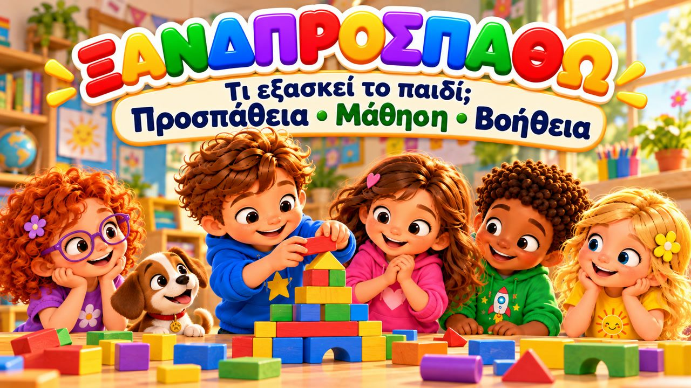
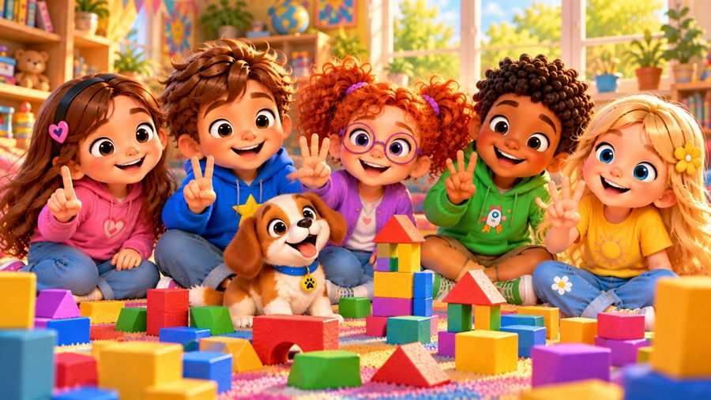
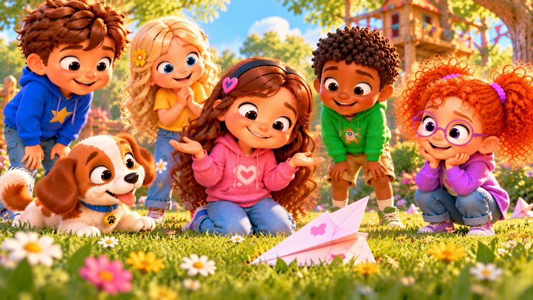
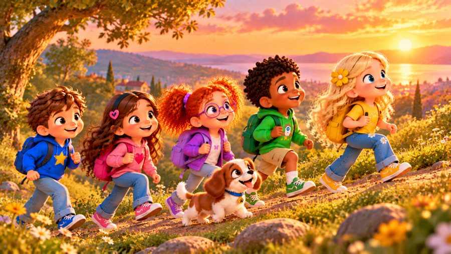

Ξαναπροσπαθώ!
Ένα χαρούμενο τραγούδι για την επιμονή! 💪 Τραγουδήστε με τον Μαξ, τη Μία, τον Τζέι, τη Λίλη, τη Ρόζα και τον σκυλάκο Μπάντι, που μαθαίνουν ότι όταν κάτι δεν πετυχαίνει με την πρώτη, δεν πειράζει: παίρνουμε ανάσα, κάνουμε ένα σχέδιο και ξαναπροσπαθούμε!
Το «Ξαναπροσπαθώ!» είναι ένα τραγούδι για παιδιά που διδάσκει επιμονή, υπομονή και θετική στάση απέναντι στα λάθη. Ένας πύργος που γκρεμίζεται, ένα ποδήλατο που δεν ισορροπεί ακόμα — κάθε λάθος κάτι μας μαθαίνει. Γιατί «δεν μπορώ ακόμα» δεν σημαίνει «δεν μπορώ». Με μεγάλους στίχους-καραόκε στην οθόνη, ιδανικό για παιδιά 3–8 ετών, στο σπίτι, στο νηπιαγωγείο, στο δημοτικό και στα Εργαστήρια Δεξιοτήτων.

▶💡 Γιατί είναι σημαντικό: Επιμονή
Τα παιδιά που συνεχίζουν να προσπαθούν μετά από ένα λάθος μαθαίνουν περισσότερα, γίνονται πιο θαρραλέα και αποκτούν αυτοπεποίθηση. Η επιμονή τούς διδάσκει ότι το «δεν μπορώ… ακόμα» είναι μέρος της μάθησης. Επαινέστε την προσπάθεια και όχι μόνο το αποτέλεσμα («Δεν τα παράτησες!») και μοιραστείτε τα δικά σας λάθη και πώς ξαναπροσπαθήσατε.
👨👩👧 Τι μαθαίνει το παιδί
- Ότι τα λάθη είναι μέρος της μάθησης
- Να ηρεμεί με μια ανάσα όταν κάτι δυσκολεύει
- Να κάνει ένα σχέδιο και να δοκιμάζει έναν νέο τρόπο
- Να ζητά βοήθεια χωρίς δισταγμό
- Ότι «δεν μπορώ ακόμα» δεν σημαίνει «δεν μπορώ»
💬 Κουβέντα μετά το τραγούδι
- Τι σου φάνηκε δύσκολο στην αρχή και τώρα το καταφέρνεις;
- Τι κάνεις όταν κάτι δεν σου βγαίνει;
- Ποιον μπορείς να ρωτήσεις όταν χρειάζεσαι βοήθεια;
🏅 Κουίζ & Πτυχίο
Είδατε το τραγούδι μαζί; Τώρα διαβάστε στο παιδί κάθε ερώτηση — το παιδί δείχνει τη σωστή εικόνα. Αν απαντήσει και στις 6 ερωτήσεις, κερδίζει ένα πτυχίο για εκτύπωση!
🔒 Το όνομα χρησιμοποιείται μόνο για να φτιαχτεί το πτυχίο στη συσκευή σας. Δεν αποθηκεύουμε και δεν στέλνουμε τίποτα.
Τα κατάφερες! 🎉
Και οι 6 απαντήσεις είναι σωστές! Γράψτε το όνομα του παιδιού για να φτιαχτεί το πτυχίο.
🖨️ Δωρεάν εκτυπώσιμα
Δωρεάν για χρήση στο σπίτι και στην τάξη. Εκτυπώστε σε χαρτί Α4.
🖼️ Σκηνές από το τραγούδι






🎵 Κι άλλα τραγούδια


🎤 Στίχοι – Ξαναπροσπαθώ!
Ωχ! Έπεσε!
Δεν πειράζει!
Παίρνω μια ανάσα...
και ξαναπροσπαθώ!
Ένα, δύο, τρία...
Πάμε ξανά!
Έφτιαξα έναν πύργο ψηλό,
τουβλάκι τουβλάκι ως τον ουρανό.
Μα ξαφνικά — μπαμ! — γκρεμίστηκε,
κι όλος ο πύργος σκορπίστηκε!
Για μια στιγμή απογοητεύτηκα,
και σκέφτηκα να σταματήσω.
Μα πήρα ανάσα, κοίταξα καλά,
και είπα «θα ξαναπροσπαθήσω!»
Δεν χρειάζεται με την πρώτη
όλα να τα καταφέρω.
Κάθε λάθος κάτι δείχνει,
κάθε φορά κάτι μαθαίνω!
Παίρνω ανάσα,
σκέφτομαι ξανά.
Κι αν ένας τρόπος δεν πετύχει,
θα δοκιμάσω διαφορετικά!
Ξαναπροσπαθώ!
Ξαναπροσπαθώ!
Κάθε μέρα μαθαίνω και μπορώ!
Ξαναπροσπαθώ!
Ξαναπροσπαθώ!
Κι έναν νέο τρόπο πάντα αναζητώ!
Αν δεν γίνει αυτή τη φορά,
δεν πειράζει, όλα καλά!
Παίρνω ανάσα, κάνω ένα σχέδιο,
και προσπαθώ ξανά!
Σήμερα ανέβηκα στο ποδήλατο,
ήθελα μόνος μου να προχωρώ.
Μα πήγα δεξιά, μετά αριστερά,
κι έβαλα γρήγορα τα πόδια χαμηλά!
«Είναι δύσκολο!» είπα δυνατά,
μα δοκίμασα πάλι, πιο σιγά.
Κι αν χρειαστώ ένα χέρι βοηθείας,
θα το ζητήσω χωρίς δισταγμό!
Λίγο πιο πέρα,
λίγο πιο καλά,
κάθε προσπάθεια
με πάει μπροστά!
Δεν χρειάζεται να ξέρω
πώς να κάνω τα πάντα εγώ.
Μπορώ να μάθω, να ρωτήσω,
και ξανά να προσπαθώ!
Παίρνω ανάσα,
σκέφτομαι ξανά.
Κι αν ένας τρόπος δεν πετύχει,
θα δοκιμάσω διαφορετικά!
Ξαναπροσπαθώ!
Ξαναπροσπαθώ!
Κάθε μέρα μαθαίνω και μπορώ!
Ξαναπροσπαθώ!
Ξαναπροσπαθώ!
Κι έναν νέο τρόπο πάντα αναζητώ!
Αν δεν γίνει αυτή τη φορά,
δεν πειράζει, όλα καλά!
Παίρνω ανάσα, κάνω ένα σχέδιο,
και προσπαθώ ξανά!
Όταν κάτι δυσκολεύει;
ΠΑΙΡΝΩ ΑΝΑΣΑ!
Μετά τι κάνω;
ΣΚΕΦΤΟΜΑΙ!
Κάνω ένα σχέδιο;
ΝΑΙ!
Και μετά;
ΔΟΚΙΜΑΖΩ!
Δεν πέτυχε;
ΔΕΝ ΠΕΙΡΑΖΕΙ!
Χρειάζομαι βοήθεια;
ΘΑ ΤΗ ΖΗΤΗΣΩ!
Και τώρα τι κάνω;
ΞΑΝΑΠΡΟΣΠΑΘΩ!
«Δεν μπορώ ακόμα»
δεν σημαίνει «δεν μπορώ».
Σημαίνει πως μαθαίνω,
πως μεγαλώνω και προχωρώ!
Βήμα βήμα,
μέρα τη μέρα,
κάθε προσπάθεια
με πάει πιο πέρα!
Ξαναπροσπαθώ!
Ξαναπροσπαθώ!
Κάθε μέρα μαθαίνω και μπορώ!
Ξαναπροσπαθώ!
Ξαναπροσπαθώ!
Κι έναν νέο τρόπο πάντα αναζητώ!
Αν δεν γίνει αυτή τη φορά,
δεν πειράζει, όλα καλά!
Παίρνω ανάσα, κάνω ένα σχέδιο,
και προσπαθώ ξανά!
Ξαναπροσπαθώ!
Ξαναπροσπαθώ!
Με κάθε προσπάθεια λίγο προχωρώ!
Δεν χρειάζεται να είμαι τέλειος,
φτάνει να προσπαθώ!
Βήμα βήμα, λίγο λίγο,
μαθαίνω και μπορώ!
Ωχ! Έπεσε!
Δεν πειράζει!
Κάτι καινούργιο
έμαθα σήμερα.
Παίρνω ανάσα,
σκέφτομαι ξανά...
και ξαναπροσπαθώ!